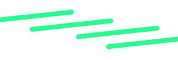

Dichtbij en makkelijk afval scheiden
Dichtbij en makkelijk afval scheiden spreekt mij aan omdat veel mensen in de buurt niet goed weten wat "afval scheiden" inhoudt en soms niet precies weten wat er gerecycled kan worden en waar ze dat kunnen doen. Daarom heeft de gemeente Amsterdam een geweldig idee geïntroduceerd om bewoners in verschillende buurten rondom de stad te informeren over recycling. Bovendien worden er inleverpunten geplaatst, zodat inwoners gemakkelijk hun verschillende soorten afval kunnen recyclen.
Ik heb hiervoor gekozen omdat ik zelf in een van deze buurten woon. Ik merk dat veel mensen in mijn buurt weinig kennis hebben over dit onderwerp en niet veel initiatief tonen om duurzamer te leven. Zelf ben ik daar helaas ook schuldig aan. Daarom vind ik dat we allemaal ons best moeten doen om bewuster met het milieu om te gaan en elkaar te ondersteunen voor een betere toekomst en een gezonde aarde!
Recente Afvalpunt
Station Noord
Afgelopen week bezochten we Station Noord. We deelden flyers uit en informeerden buurtbewoners over afval scheiden en waarom duurzaamheid zo belangrijk is.